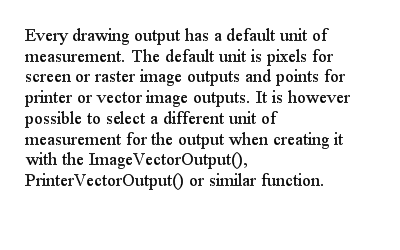

DrawVectorParagraph()
Syntax
DrawVectorParagraph(Text$, Width.d, Height.d [, Flags])Description
Draw a paragraph of text (multiple lines) within a given bounding box with automatic layout for linebreaks. If the text does not fit the defined box, it will be cut at the end. The font to use can be set with VectorFont().
Parameters
Text$ Specifies the text to draw. Width.d Specifies the width for the paragraph. Line breaks will be added if text is longer than the specified width. Height.d Specifies the maximum height for the paragraph. If the text does not fit within this height it will be cut. The required height for a paragraph can be calculated with VectorParagraphHeight(). Flags (optional) Can be one of the following values: #PB_VectorParagraph_Left : The paragraph is aligned to the left (default) #PB_VectorParagraph_Right : The paragraph is aligned to the right #PB_VectorParagraph_Center: The paragraph is centered #PB_VectorParagraph_Block : Lines in the paragraph are spaced to form a block of text (not supported on Windows)
Return value
None.
Example
If OpenWindow(0, 0, 0, 400, 250, "VectorDrawing", #PB_Window_SystemMenu | #PB_Window_ScreenCentered) CanvasGadget(0, 0, 0, 400, 250) LoadFont(0, "Times New Roman", 20) If StartVectorDrawing(CanvasVectorOutput(0)) Text$ = "Every drawing output has a default unit of measurement. The default unit is pixels " + "for screen or raster image outputs and points for printer or vector image outputs. " + "It is however possible to select a different unit of measurement for the output when " + "creating it with the ImageVectorOutput(), PrinterVectorOutput() or similar function." VectorFont(FontID(0), 18) MovePathCursor(25, 25) DrawVectorParagraph(Text$, 350, 200) StopVectorDrawing() EndIf Repeat Event = WaitWindowEvent() Until Event = #PB_Event_CloseWindow EndIf
See Also
VectorParagraphHeight(), DrawVectorText(), AddPathText(), VectorFont()
Supported OS
All